Welcome Back (quà quay lại)
Người chơi đã qua level 30 mà bỏ game từ 4 ngày trở lên sẽ nhận một gói quà khi quay lại (panel "Welcome Back!" / "Royal Gift!").
Mô tả
- Người chơi đã qua level 30 mà bỏ game từ 4 ngày trở lên sẽ nhận một gói quà khi quay lại (panel "Welcome Back!" / "Royal Gift!").
- Gói quà chia bậc theo số ngày vắng (churn days): coin, mạng vô hạn và booster trước level vô hạn theo phút, booster trong game, cộng một "WelcomeBackToken" = thêm nước đi (extra moves) giảm dần trong vài level tiếp theo, và với bậc cao còn chèn 3 level "reactivation" dễ để người chơi lấy lại nhịp.
- Bảng quà có 3 biến thể A/B/C trong code nhưng bản 34771 luôn gọi biến thể C (abGroup = 3 được truyền cứng).
- Đây là công cụ win-back chính, gắn với thông báo đẩy 15/30/90 ngày.
Thiết kế chi tiết
Tóm tắt thiết kế
Code Người chơi đã qua level 30 mà vắng từ 4 ngày trở lên (ngày đổi lúc 00:00 UTC) nhận panel “Welcome Back!” khi quay lại. Bản 34771 luôn dùng biến thể C (truyền cứng abGroup = 3): vắng 4–6 ngày → bậc 1, 7–14 → bậc 2, ≥ 15 → bậc 3. Code còn biến thể A (15/30/90 ngày, khớp 3 thông báo đẩy  15D/30D/90D) và B nhưng không được gọi.
15D/30D/90D) và B nhưng không được gọi.
Code Bậc 1: chỉ  UEB 60 phút. Bậc 2:
UEB 60 phút. Bậc 2:  1.000 C +
1.000 C +  UL 180 phút +
UL 180 phút +  UPL 180 phút + 1 IGB + token +5 nước. Bậc 3: 2.000 C + UL 720 phút + UPL 720 phút + 2 IGB + token +10 nước + 3 level reactivation (level dễ thay cho level thường).
UPL 180 phút + 1 IGB + token +5 nước. Bậc 3: 2.000 C + UL 720 phút + UPL 720 phút + 2 IGB + token +10 nước + 3 level reactivation (level dễ thay cho level thường).
Code Token thêm nước giảm dần theo số lần thắng: bậc 2 là 5, 4, 3, 2, 1 nước ở 5 lần thắng kế tiếp; bậc 3 là +10 nước cho 5 lần thắng đầu, rồi 8, 6, 4, 2 (mỗi mức 5 lần thắng, tổng 25). Thua không làm giảm bộ đếm. Chỉ áp cho level chính, không cho Richard's Journey.
Code Chống gian lận: churn chỉ được tính khi giờ đã được backend xác thực. Mở game offline thì quà được giữ “chưa xác thực” (OfflineGiftDeservedDate), lần sau có giờ server mới trao; đồng hồ bị lùi thì xoá. Backend tắt được tính năng (WelcomeBackDisabled, live 11/11 = 0).
Playtest14/11 bổ sung: Fixture pending quà/churn4: Quà Hoàng Gia cho ElectroBall vô hạn1giờ. Không phải kiểm chứng vắng mặt thật4ngày. Fixture pending/churn30: UI +10 lượt,2000coin, 12h lives và3prelevel booster;5ingame booster mỗi loại2. Fixture có chỉnh datebit trước startup, không dùng làm bằng chứng biên ngày. Sau claim: prelevel rocket/dynamite11h59,ElectroBall12h57 do còn thời gian quà1h trước đó. Vào chơi level162 thật trên snapshot offline:28moves,12dragon,3pillar. Chưa so baseline để xác nhận +10moves thực nhận. Thắng level162 qua thao tác UI, nhận100potion; DB level163,coin8764 (tăng45 sau claim),album score10→11.
12h lives và3prelevel booster;5ingame booster mỗi loại2. Fixture có chỉnh datebit trước startup, không dùng làm bằng chứng biên ngày. Sau claim: prelevel rocket/dynamite11h59,ElectroBall12h57 do còn thời gian quà1h trước đó. Vào chơi level162 thật trên snapshot offline:28moves,12dragon,3pillar. Chưa so baseline để xác nhận +10moves thực nhận. Thắng level162 qua thao tác UI, nhận100potion; DB level163,coin8764 (tăng45 sau claim),album score10→11.
Playtest biên/extra moves14/11: fixture level162 và LastActiveDate cách3/4ngày, không ép pending. Offline3ngày: churn0/deserved0;4ngày: client ghi churn4,deserved20772,pending0, không phát quà trước xác thực backend. So cùng reactivation12rồng/3cột: RemainingExtraMoveLevel0 có18lượt;25/type2 có28lượt (+10). Màn resume giữ18lượt cũ khi restoreDB, phải thoát và tạo màn mới để so. Fail/quit không giảm counters25/3; snapshot thắng thật trước đó giảm25→24 và3→2. Chưa xác nhận chuyển online để phát/hủy quà offline, biên bonus cuối cùng hay chơi hết3reactivation.
Playtest validated14/11: Mô phỏng validated, last=today, churn4, deserved=today: TryAddWelcomeBackGift trảtrue, hiện quà ElectroBall1h và xóa deserved. Không phải phản hồi backend thật. Mô phỏng validated, deserved ở tương lai1ngày: helper trảfalse, xóa deserved và không hiện quà. Ảnh Home kèm DB ledger; chưa kiểm chứng end-to-end backend. Bằng chứng: facts/runtime/review_20261112/ps_validated_ledger.json và *_helper.json.
Luồng người chơi từng bước
- Tính số ngày vắngClientCode
TryAddWelcomeBackGiftchạy khi ping server xong, khi Home khởi động (launch, force home) và khi tải file save. Churn = ngày hiện tại (giờ server, 00:00 UTC) − LastActiveDate. RồiUpdateLastActiveDayghi hôm nay. - Điều kiện nhậnClientCodeLevel ≥ 31 (
MinimumLevel30), churn ≥ 4 (MinimumDayDifference), không bị backend tắt. Đang nợ quà chưa nhận thì đẩy luôn, không cần tính lại. - Quay lại khi offlineClientCodeGiờ chưa xác thực mà churn ≥ 4: chỉ lưu ChurnDays và
OfflineGiftDeservedDate= hôm nay. Lần sau có giờ server: nếu ngày đó ≤ hôm nay thì trao ('Try to show invalidated(offline) rewards'), nếu > hôm nay (đồng hồ bị lùi) thì xoá về 0. - Panel Welcome BackGiao diệnCodeChỉ đẩy ở Home scene và tab Home (tab khác thì chờ
OnSectionChange).ShowWelcomeBackRewardsAction(churnDays, 3)mởWelcomeBackRewardsPanel: “Welcome Back!” / “Here are some gifts for you to pick up where you left!” (biến thể chữ “Royal Gift!” / “Here is a gift from King Richard!”). - Nhận gói quàNgười chơiCode
WelcomeBackGiftAwarded: tính bậc, kiểu đường cong nước đi, gói quà; cộng kho, gửi server, analyticsWBGiftClaim(gift_tier, churned_period, ab_group, reward_inventory). Ghi level bắt đầu,ExtraMoveType,RemainingExtraMoveLevel, với bậc 3 thêmRemainingReactivationLevel= 3; xoá cờ nợ và parse lại level. - Thêm nước đi trong mànGiao diệnCodeKhi tải level:
GetWelcomeBackExtraMoves= moves − ⌊đã thắng / step⌋ × (moves ÷ (levels ÷ step)), không âm. TokenWelcomeBackExtraMovesTokenhiện “+X Moves” đầu màn. - Level reactivationClientCodeBậc 3 (biến thể C): 3 lần thắng kế tiếp dùng file 'reactivation_*' (bộ 35 level dễ) thay cho level thường, chọn loại theo chữ số cuối của số level (
ReactivationLevelResolver.TryGetReactivationLevel). - Giảm bộ đếm khi thắngClientCode
LevelResolver.IncrementUserLevel→OnLevelOrRoundWon: RemainingExtraMoveLevel − 1 và RemainingReactivationLevel − 1. Hết bộ đếm thì về độ khó thường. - Backend tắt tính năngServerCode
DisabledByBackendghi AppKeyValue 'WelcomeBackDisabled' = 1 và xoá level bắt đầu, ngày quà offline, cờ nợ, bộ đếm: không còn quà, nước đi thêm hay level reactivation. - Playtest 12/11/2026 — bằng chứng quan sáttesterPlaytestCác ảnh là quan sát từng bước. Mode/override ghi trong appendix/playtest-20261112; chưa tương đương toàn UC đã pass.
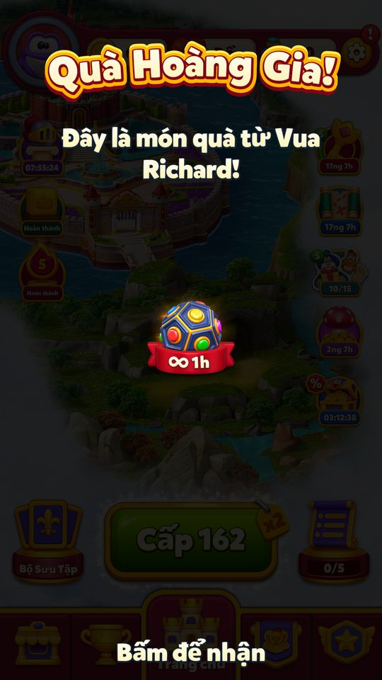
Fixture pending quà/churn4: Quà Hoàng Gia cho ElectroBall vô hạn1giờ. Không phải kiểm chứng vắng mặt thật4ngày. 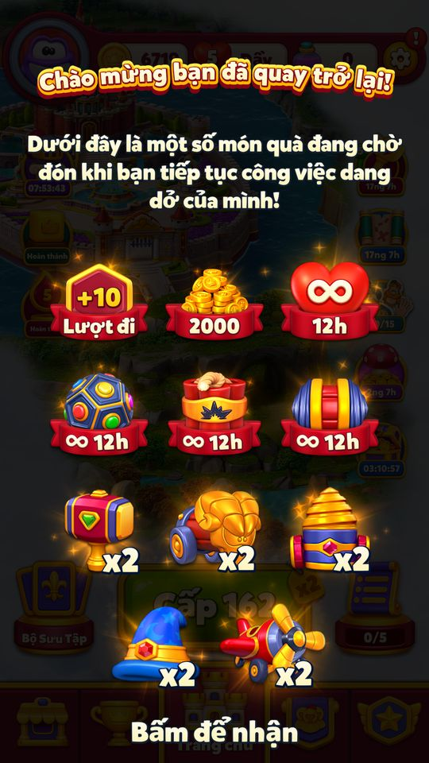
Fixture pending/churn30: UI +10 lượt, 2000coin,12h lives và3prelevel booster;5ingame booster mỗi loại2. Fixture có chỉnh datebit trước startup, không dùng làm bằng chứng biên ngày.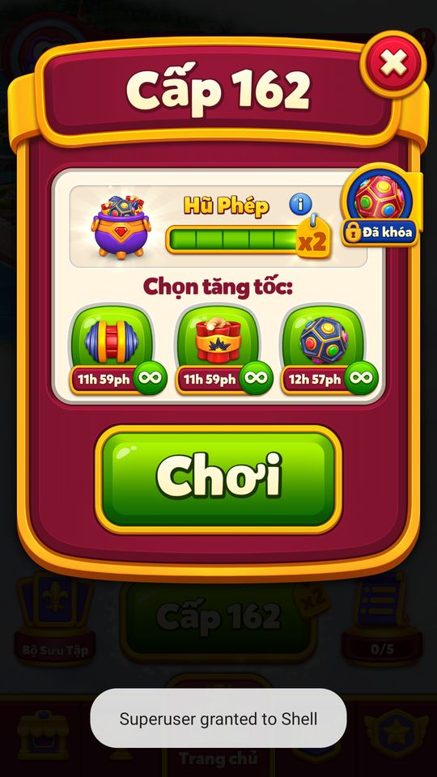
Sau claim: prelevel rocket/dynamite11h59,ElectroBall12h57 do còn thời gian quà1h trước đó. 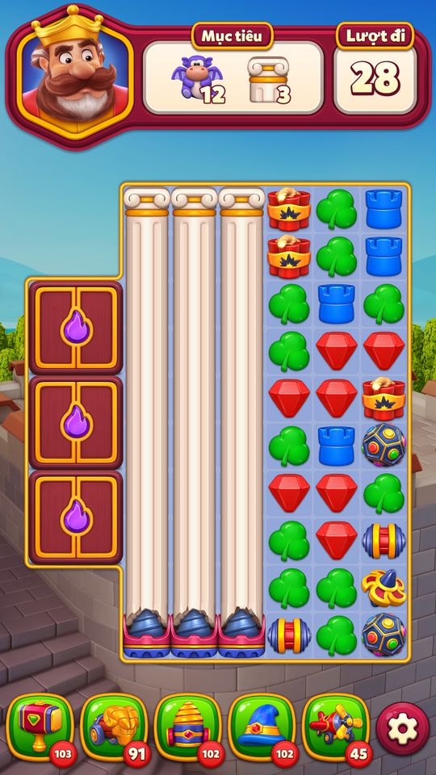
Vào chơi level162 thật trên snapshot offline:28moves,12dragon,3pillar. Chưa so baseline để xác nhận +10moves thực nhận. 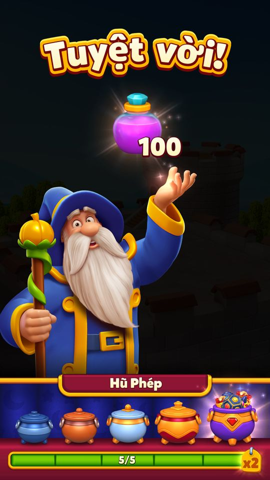
Thắng level162 qua thao tác UI, nhận100potion; DB level163,coin8764 (tăng45 sau claim),album score10→11. Fixture level162, LastActiveDate cách3ngày, không pending: vào Home không quà, churn0/deserved0; last cập nhật20772. 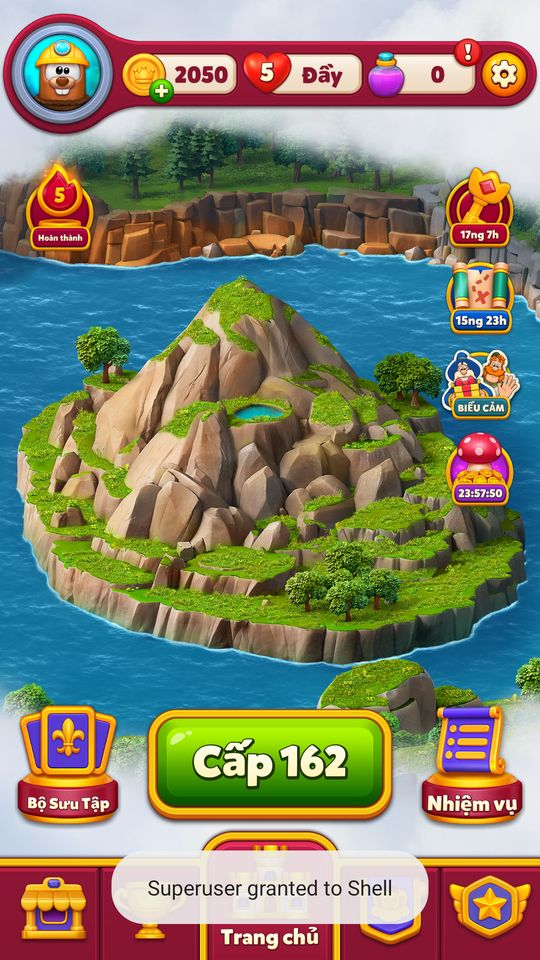
Fixture level162, cách4ngày, không pending: Home chưa phát quà; client tự ghi churn4,OfflineGiftDeservedDate20772,pending0. Chưa có xác thực backend. 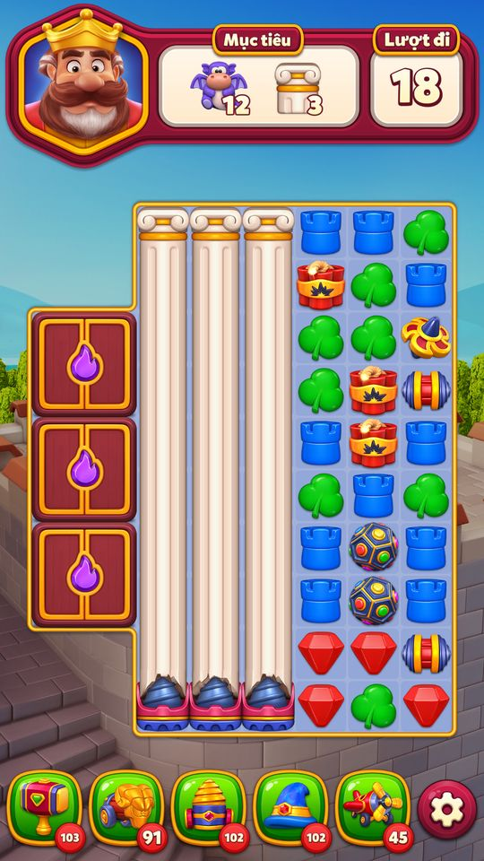
Cùng snapshot reactivation level162, đặt RemainingExtraMoveLevel=0: màn mới12rồng/3cột có18lượt. 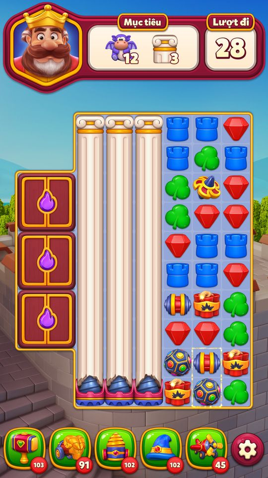
Giữ RemainingExtraMoveLevel25,type2,reactivation3: màn mới cùng mục tiêu có28lượt, xác nhận+10. Bố trí màu/booster có thể đổi; đây là fixture client. 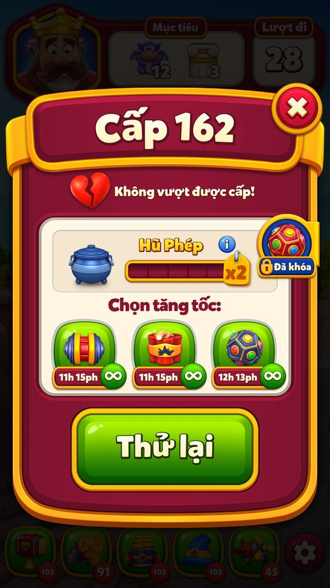
Thoát qua xác nhận dẫn tới Không vượt được cấp và Thử lại. DB remainingExtra25/reactivation3 không giảm sau fail. 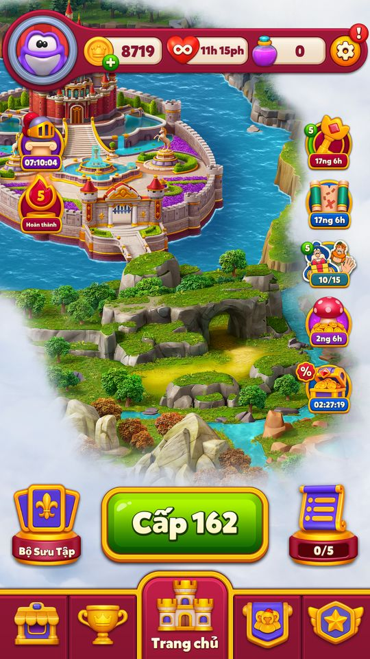
Đóng Thử lại trở về Home162; không thắng/không cộng level. Đối chiếu snapshot thắng từ phiên trước: remainingExtra25→24,reactivation3→2. 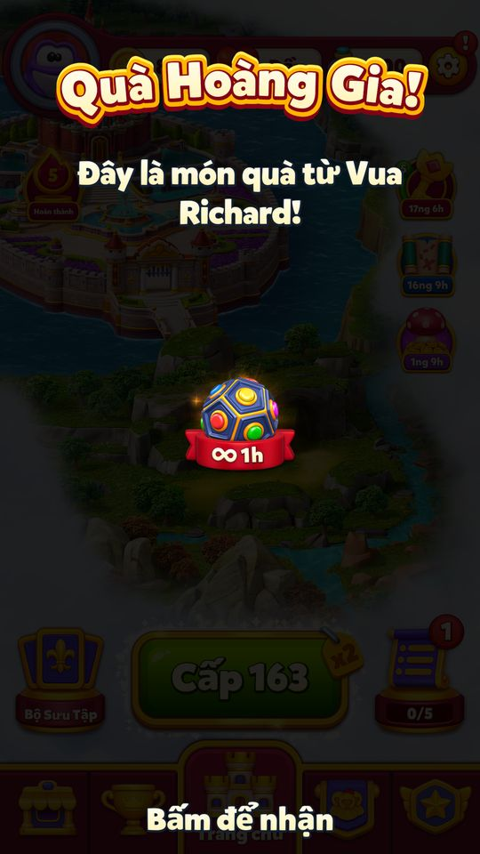
Mô phỏng validated, last=today, churn4, deserved=today: TryAddWelcomeBackGift trảtrue, hiện quà ElectroBall1h và xóa deserved. Không phải phản hồi backend thật. 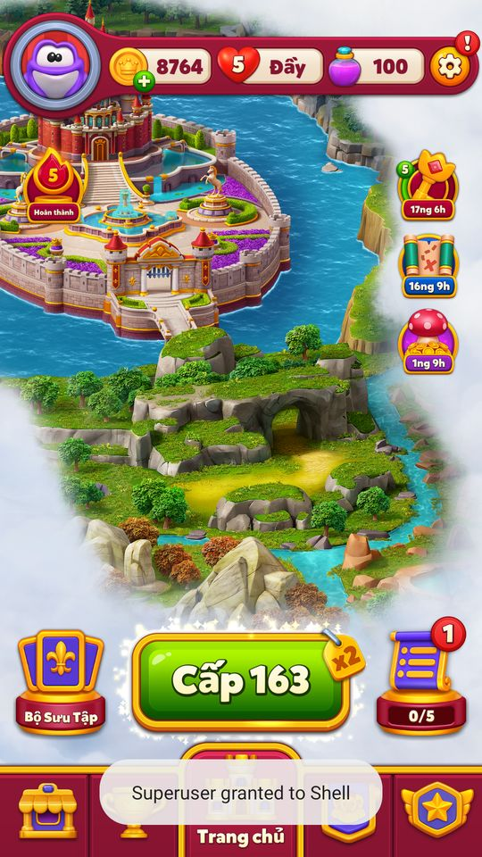
Mô phỏng validated, deserved ở tương lai1ngày: helper trảfalse, xóa deserved và không hiện quà. Ảnh Home kèm DB ledger; chưa kiểm chứng end-to-end backend.


Bảng quà biến thể C (đang chạy)
| Bậc | Ngày vắng | Quà | Token thêm nước | Level reactivation |
|---|---|---|---|---|
| 1 | 4–6 | UEB 60 phút | — | — |
| 2 | 7–14 | 1.000 C + UL 180 phút + UPL 180 phút + 1 IGB | +5 nước, giảm 1 mỗi lần thắng: 5, 4, 3, 2, 1 (5 lần thắng) | — |
| 3 | ≥ 15 | 2.000 C + UL 720 phút + UPL 720 phút + 2 IGB | +10 nước ×5 lần thắng, rồi 8, 6, 4, 2 (mỗi mức 5 lần thắng; 25 lần, tổng 150 nước) | 3 |
Code GetTier, GetRewards, GetBaseRewards (tier 1/2/3 = 180/720/1.440 phút), GetExtraMovesType (C: bậc 2 → kiểu 4, bậc 3 → kiểu 2), GetExtraMovesParams. Token = RewardType 37 (WelcomeBackToken) mang số nước ban đầu.
Hai biến thể còn trong code (không được gọi ở bản 34771)
| Biến thể | Bậc theo ngày vắng | Quà | Token | Reactivation |
|---|---|---|---|---|
| A (mặc định) | 15–29 → 1; 30–89 → 2; ≥ 90 → 3 | 1.000/2.000/3.000 C + UL và UPL 180/720/1.440 phút + 1/2/3 IGB | +5 / +10 / +15 nước trong 25 lần thắng (giảm mỗi 5 lần) | 3 ở mọi bậc |
| B | 7–14 → 1; ≥ 15 → 2 | Bậc 1: UPL 60 phút; bậc 2: 2.000 C + UL 720 + UPL 720 + 2 IGB | Bậc 1: +5 giảm dần trong 5 lần thắng; bậc 2: +10 giảm 1 mỗi lần trong 10 lần thắng | chỉ bậc 2 |
Code GetTier, GetRewards, AreReactivationLevelsEnabled. Nhận định Thông báo đẩy 15D/30D/90D (“We have a surprise for you!”, “You have a lot of gifts to claim!”, “A chest full of gifts are waiting for you!”) khớp biến thể A.
Kiểu đường cong nước đi (GetExtraMovesParams)
| Kiểu | Nước ban đầu | Số lần thắng áp dụng | Bước giảm | Chuỗi nước theo lần thắng |
|---|---|---|---|---|
| 1 | 5 | 25 | −1 mỗi 5 lần | 5×5, 4×5, 3×5, 2×5, 1×5 |
| 2 | 10 | 25 | −2 mỗi 5 lần | 10×5, 8×5, 6×5, 4×5, 2×5 |
| 3 | 15 | 25 | −3 mỗi 5 lần | 15×5, 12×5, 9×5, 6×5, 3×5 |
| 4 | 5 | 5 | −1 mỗi lần | 5, 4, 3, 2, 1 |
| 5 | 10 | 10 | −1 mỗi lần | 10, 9, …, 1 |
Code Công thức trong GetWelcomeBackExtraMoves: extra = moves − ⌊played / step⌋ × ⌊moves / ⌊levels / step⌋⌋, played = levels − RemainingExtraMoveLevel.
Vận dụng cho game khác
- Chia quà win-back theo độ dài vắng mặt, bậc thấp chỉ là quà nhỏ (60 phút booster) để không “thưởng” cho việc bỏ game ngắn ngày.
- Ngoài tiền, cho người quay lại thêm nước đi giảm dần và vài level dễ: họ thắng ngay vài trận đầu, lấy lại cảm giác rồi mới về độ khó thường.
- Đếm theo lần thắng, không theo số trận: thua không làm mất phần hỗ trợ.
- Giữ quà offline ở trạng thái “chưa xác thực” cho tới khi có giờ server, để chặn lùi/đẩy đồng hồ.
- Nhận định Rủi ro: biến thể C trả quà từ 4 ngày vắng, sớm hơn nhiều so với 15 ngày của A; người chơi có thể học cách nghỉ 1 tuần để lấy bậc 2. Nên theo dõi tỉ lệ churn 4–14 ngày trước và sau khi bật.
Ảnh cần chụp (2) — 13 ảnh đã gắn
Chụp vào screens/deep_1112/WelcomeBack/ rồi ghi tên file vào flow[].shots.
- Panel Welcome Back: Panel 'Welcome Back!' với gói quà bậc 2 hoặc 3
- Thêm nước đi trong màn: Đầu màn có token '+X Moves'
Bảng tổng hợp mọi tính năng đã làm chi tiết: RoyalKingdom_ThietKeChiTiet.xlsx.
Mở khóa & điểm vào
Level hiện tại ≥ 31 (TryAddWelcomeBackGiftFlow trả false nếu Level < 0x1F; const MinimumLevel = 30), số ngày vắng ≥ 4 (MinimumDayDifference = 4), không bị backend tắt (AppKeyValue 'WelcomeBackDisabled' ≠ 1, ghi bởi DisabledByBackend). Live 11/11: WelcomeBackDisabled = 0.
Điểm vào:
- Panel
WelcomeBackRewardsPaneltự bật ở Home khi quay lại - Token +moves
WelcomeBackExtraMovesTokentrong màn chơi ở các level sau đó - Thông báo đẩy WelcomeBackGift15D/30D/90DNotification
Cách hoạt động
- Mỗi khi ping server xong, khi Home khởi động (launch / force home) và khi load file save (
UserLevelLoadManager.ValidateLoadFile), client gọiTryAddWelcomeBackGift=TryAddWelcomeBackGiftFlowrồiUpdateLastActiveDay. - Churn days = ngày hiện tại − LastActiveDate (−1 nếu chưa từng ghi).
- Nếu đang nợ quà (
ShouldGiveReward) thì đẩy flow ngay. - Nếu giờ đã được backend xác thực và churn ≥ 4: lưu ChurnDays và đẩy flow.
- Nếu giờ chưa xác thực (offline) và churn ≥ 4: chỉ lưu ChurnDays +
OfflineGiftDeservedDate= hôm nay (quà 'chưa xác thực'); lần sau khi giờ đã xác thực mà churn < 4, nếu OfflineGiftDeservedDate ≤ hôm nay thì trao quà, còn nếu > hôm nay (đồng hồ bị lùi) thì xoá. - LastActiveDate chỉ cập nhật bằng giờ client khi giờ đó lớn hơn giá trị cũ.
AddWelcomeBackGiftFlowchỉ đẩy khi ở Home scene + tab Home (không thì chờOnSectionChange).ShowWelcomeBackGiftbỏ nếu ChurnDays < 4 (log 'Do not push ... tier is {0}'), ngược lại đẩyShowWelcomeBackRewardsAction(churnDays, abGroup = 3).- Khi panel hiện,
WelcomeBackGiftAwardedtính tier, kiểu extra moves, gói quà, cộng kho, gửi server, analyticsWBGiftClaim, ghiLevel= level bắt đầu,ExtraMoveType,RemainingExtraMoveLevel, có thểRemainingReactivationLevel = 3, xoá cờ nợ và parse lại file level. - Mỗi lần thắng level/vòng (
LevelResolver.IncrementUserLevel→OnLevelOrRoundWon) giảm RemainingExtraMoveLevel và RemainingReactivationLevel;GetWelcomeBackExtraMovescộng nước đi vào level data khi load level. - Playtest14/11 bổ sung: Fixture pending quà/churn4: Quà Hoàng Gia cho ElectroBall vô hạn1giờ.
- Không phải kiểm chứng vắng mặt thật4ngày.
- Fixture pending/churn30: UI +10 lượt,2000coin,12h lives và3prelevel booster;5ingame booster mỗi loại2.
- Fixture có chỉnh datebit trước startup, không dùng làm bằng chứng biên ngày.
- Sau claim: prelevel rocket/dynamite11h59,ElectroBall12h57 do còn thời gian quà1h trước đó.
- Vào chơi level162 thật trên snapshot offline:28moves,12dragon,3pillar.
- Chưa so baseline để xác nhận +10moves thực nhận.
- Thắng level162 qua thao tác UI, nhận100potion; DB level163,coin8764 (tăng45 sau claim),album score10→11.
- Playtest biên/extra moves14/11: fixture level162 và LastActiveDate cách3/4ngày, không ép pending.
- Offline3ngày: churn0/deserved0;4ngày: client ghi churn4,deserved20772,pending0, không phát quà trước xác thực backend.
- So cùng reactivation12rồng/3cột: RemainingExtraMoveLevel0 có18lượt;25/type2 có28lượt (+10).
- Màn resume giữ18lượt cũ khi restoreDB, phải thoát và tạo màn mới để so.
- Fail/quit không giảm counters25/3; snapshot thắng thật trước đó giảm25→24 và3→2.
- Chưa xác nhận chuyển online để phát/hủy quà offline, biên bonus cuối cùng hay chơi hết3reactivation.
- Playtest validated14/11: Mô phỏng validated, last=today, churn4, deserved=today: TryAddWelcomeBackGift trảtrue, hiện quà ElectroBall1h và xóa deserved.
- Không phải phản hồi backend thật.
- Mô phỏng validated, deserved ở tương lai1ngày: helper trảfalse, xóa deserved và không hiện quà.
- Ảnh Home kèm DB ledger; chưa kiểm chứng end-to-end backend.
- Bằng chứng: facts/runtime/review_20261112/ps_validated_ledger.json và *_helper.json.
Phần thưởng
Phần thưởng (theo GDD)
| Ngữ cảnh | Phần thưởng | Bằng chứng |
|---|---|---|
| Nhóm C (đang dùng) tier 1: vắng 4–6 ngày | 60 phút Unlimited Electro Ball | WelcomeBackManager.GetRewards |
| Nhóm C tier 2: vắng 7–14 ngày | 1000 Coins + ∞180 ULphút · Mạng vô hạn + 180 phút unlimited pre-level boosters + 1 AllInGameBoosters + WelcomeBackToken 5 nước (5 level) | WelcomeBackManager.GetRewards; GetBaseRewards(1); GetExtraMovesParams(4) |
| Nhóm C tier 3: vắng ≥ 15 ngày | 2000 Coins + ∞720 ULphút · Mạng vô hạn + 720 phút unlimited pre-level + 2 AllInGameBoosters + WelcomeBackToken 10 nước (25 level) + 3 level reactivation | WelcomeBackManager.GetRewards; GetBaseRewards(2); GetExtraMovesParams(2) |
| Nhóm A (code có, không gọi) tier 1/2/3 | 1000/2000/3000 Coins + 180/720/1440 phút UL + cùng số phút pre-level + 1/2/3 AllInGameBoosters + token 5/10/15 nước + 3 level reactivation | WelcomeBackManager.GetBaseRewards; GetExtraMovesParams(1..3) |
Số liệu chính
| Chỉ số | Giá trị | Nguồn |
|---|---|---|
| Số ngày vắng tối thiểu | 4 | MinimumDayDifference · code const |
| Bậc quà | 4–6 ngày → 1; 7–14 → 2; ≥ 15 → 3 | GetTier nhóm C · code const |
| Biến thể không dùng trong bản này | 7–14 → 1; ≥ 15 → 2 | GetTier nhóm B · code const |
| Khớp thông báo 15D/30D/90D | 15–29 → 1; 30–89 → 2; ≥ 90 → 3 | GetTier nhóm A/mặc định · code const |
| Bậc thấp nhất | 60 phút UnlimitedElectroBall | GetRewards nhóm C tier 1 · code const |
| Biến thể B | 60 phút UnlimitedPreLevel + token | GetRewards nhóm B tier 1 · code const |
| Số level reactivation chèn vào | 3 | RemainingReactivationLevel · code const |
Use case (12)
Bấm vào từng use case để mở. Mở/đóng tất cả
UC-01 Quay lại sau ≥ 4 ngày (giờ đã xác thực)
Các bước- HomeSceneFlow.StartFlowAfterLaunch / PingHttpCommand.Finish → TryAddWelcomeBackGift
- GetCurrentChurnDays = CurrentDate − LastActiveDate
- churn ≥ 4 → set_ChurnDays, AddWelcomeBackGiftFlow
- UpdateLastActiveDay ghi ngày hôm nay
| Actor | Player |
|---|---|
| Trigger | Mở game sau thời gian vắng |
| Điều kiện | Level ≥ 31; không bị tắt; IsTimeValidatedByBackend |
| Kết quả | Flow quà Welcome Back được đẩy vào luồng Home |
| Quy tắc / số liệu | MinimumLevel 30 (so Level < 31), MinimumDayDifference 4 |
| Evidence | WelcomeBackManager.TryAddWelcomeBackGift; WelcomeBackManager.TryAddWelcomeBackGiftFlow; WelcomeBackManager.GetCurrentChurnDays; WelcomeBackManager.UpdateLastActiveDay |
UC-02 Quay lại khi offline (quà chưa xác thực)
Các bước- Lưu ChurnDays và OfflineGiftDeservedDate = CurrentDate (log 'Set invalidated(offline) deserved date')
- Không hiện quà ngay
- Lần sau có giờ server: churn < 4 nhưng OfflineGiftDeservedDate ≠ 0 và ≤ hôm nay → hiện quà (log 'Try to show invalidated(offline) rewards')
| Actor | Player |
|---|---|
| Trigger | Mở game không có mạng |
| Điều kiện | Giờ chưa xác thực; churn ≥ 4 |
| Kết quả | Quà được giữ chờ tới khi xác thực giờ |
| Quy tắc / số liệu | Nếu OfflineGiftDeservedDate > hôm nay (đã lùi đồng hồ) thì xoá về 0, không có quà |
| Evidence | WelcomeBackManager.TryAddWelcomeBackGiftFlow |
UC-03 Đang nợ quà chưa nhận
Các bước- Bỏ qua tính churn, gọi AddWelcomeBackGiftFlow ngay
| Actor | System |
|---|---|
| Trigger | TryAddWelcomeBackGift |
| Điều kiện | ShouldGiveReward = true |
| Kết quả | Quà hiện lại ở lần vào Home kế tiếp |
| Evidence | WelcomeBackManager.TryAddWelcomeBackGiftFlow; WelcomeBackProgress.get_ShouldGiveReward |
UC-04 Chỉ hiện ở tab Home
Các bước- Ở Home scene + tab Home → ShowWelcomeBackGift (log 'pushed in HomeScene/HomeSection')
- Tab khác → SubscribeToSectionChange, SectionChangedToHome đẩy khi quay về
- Không ở Home scene → log 'HomeScene is not active'
| Actor | System |
|---|---|
| Trigger | AddWelcomeBackGiftFlow |
| Evidence | WelcomeBackManager.AddWelcomeBackGiftFlow; WelcomeBackManager.SubscribeToSectionChange; WelcomeBackManager.SectionChangedToHome |
UC-05 Chọn bậc quà (tier) theo ngày vắng
Các bước- ShowWelcomeBackRewardsAction(churnDays, 3)
- GetTier(churn, C): 4–6 ngày → 1; 7–14 → 2; ≥ 15 → 3
| Actor | System |
|---|---|
| Trigger | ShowWelcomeBackGift / WelcomeBackGiftAwarded |
| Điều kiện | ChurnDays ≥ 4 |
| Kết quả | Bậc quà 1/2/3 |
| Quy tắc / số liệu | Biến thể B: 7–14 → 1, ≥ 15 → 2. Biến thể A (mặc định): 15–29 → 1, 30–89 → 2, ≥ 90 → 3. Bản này truyền cứng nhóm C (abGroup = 3) |
| Evidence | WelcomeBackManager.ShowWelcomeBackGift; WelcomeBackManager.GetTier |
UC-06 Nhận gói quà
Các bước- WelcomeBackGiftAwarded: tier, type = GetExtraMovesType, params = GetExtraMovesParams(type), rewards = GetRewards(extraMoves, tier, abGroup)
- UserManager.AddInventoryPackage; SendDataToBackend
- AnalyticsManager.WelcomeBackGiftClaim(tier, churnDays, abGroup, package)
- set_Level(level hiện tại), set_V2MigrationDone(true), set_ExtraMoveType, set_RemainingExtraMoveLevel
- set_ShouldGiveReward(false), set_OfflineGiftDeservedDate(0); nếu đang ở Home thì LevelResolver.ParseLevelFile
| Actor | Player |
|---|---|
| Trigger | Panel Welcome Back hiện |
| Kết quả | Quà vào kho; extra moves và level reactivation được kích hoạt |
| Quy tắc / số liệu | Bảng quà nhóm C: tier1 = 60 phút Unlimited Electro Ball; tier2 = 1000 coin + 180 phút mạng vô hạn + 180 phút booster trước level vô hạn + 1 AllInGameBoosters + token 5 nước; tier3 = 2000 coin + 720 phút UL + 720 phút unlimited pre-level + 2 AllInGameBoosters + token 10 nước |
| Evidence | WelcomeBackManager.WelcomeBackGiftAwarded; WelcomeBackManager.GetRewards; WelcomeBackManager.GetBaseRewards; ShowWelcomeBackRewardsAction.ShowRewards |
UC-07 Thêm nước đi giảm dần ở các level sau
Các bước- LevelResolver (OnRemoteLevelDownloaded / GetLevelData) gọi GetWelcomeBackExtraMoves
- played = tổng level − RemainingExtraMoveLevel; extra = moves − (played / bước) × (moves / (tổng level / bước))
- WelcomeBackExtraMovesToken hiện '+X Moves' trong màn
| Actor | System |
|---|---|
| Trigger | Load level sau khi nhận quà |
| Điều kiện | Progress.Level ≠ 0, ExtraMoveType > 0, RemainingExtraMoveLevel > 0 |
| Kết quả | Level đầu có nhiều nước nhất, giảm dần tới 0 |
| Quy tắc / số liệu | Kiểu 4 (C tier2): 5 nước giảm 1 mỗi level trong 5 level (5,4,3,2,1); kiểu 2 (C tier3): 10 nước giảm 2 mỗi 5 level trong 25 level (suy luận từ công thức và GetExtraMovesParams) |
| Evidence | WelcomeBackManager.GetWelcomeBackExtraMoves; WelcomeBackManager.GetExtraMovesParams; LevelResolver.OnRemoteLevelDownloaded |
UC-08 Thắng level giảm bộ đếm
Các bước- LevelResolver.IncrementUserLevel → OnLevelOrRoundWon(currentLevel)
- ReactivationLevelResolver.OnLevelWon
- RemainingExtraMoveLevel − 1; RemainingReactivationLevel − 1 (kẹp 0..15)
| Actor | System |
|---|---|
| Trigger | Thắng level hoặc vòng |
| Điều kiện | Progress.Level ≠ 0 |
| Kết quả | Hết bộ đếm thì người chơi về độ khó bình thường |
| Quy tắc / số liệu | Chỉ giảm khi thắng (thua không tốn lượt — suy luận vì chỉ gọi từ IncrementUserLevel) |
| Evidence | WelcomeBackManager.OnLevelOrRoundWon; LevelResolver.IncrementUserLevel; ReactivationLevelResolver.OnLevelWon |
UC-09 Chèn 3 level reactivation
Các bước- WelcomeBackGiftAwarded set_RemainingReactivationLevel(3) khi: nhóm C tier 3; nhóm B tier ≠ 1; nhóm A mọi tier
- LevelResolver.GetLevelData dùng ReactivationLevelResolver.TryGetReactivationLevel thay file level thường bằng file reactivation_*
- Loại level reactivation chọn theo chữ số cuối của số level (GetReactivationLevelType)
| Actor | System |
|---|---|
| Trigger | Nhận quà bậc phù hợp |
| Điều kiện | AreReactivationLevelsEnabled(tier, group) |
| Kết quả | 3 level thắng tiếp theo dùng level dễ trong bộ 35 level reactivation |
| Quy tắc / số liệu | Với nhóm C đang chạy: chỉ tier 3 (≥ 15 ngày vắng) |
| Evidence | WelcomeBackManager.WelcomeBackGiftAwarded; ReactivationLevelResolver.AreReactivationLevelsEnabled; ReactivationLevelResolver.TryGetReactivationLevel; LevelResolver.GetLevelData |
UC-10 Backend tắt tính năng
Các bước- UserEventHandler.DisabledByBackend(flags) → WelcomeBackManager.DisabledByBackend
- AppKeyValue.SetBool('WelcomeBackDisabled')
- Nếu tắt: Level = 0, OfflineGiftDeservedDate = 0, ShouldGiveReward = false, xoá bộ đếm
| Actor | Server |
|---|---|
| Trigger | Cờ disable trong UserEventHandler |
| Kết quả | Không còn quà / extra moves / reactivation |
| Evidence | WelcomeBackManager.DisabledByBackend; WelcomeBackManager.get_IsDisabledByBackend; UserEventHandler.DisabledByBackend |
UC-11 Migration dữ liệu cũ
Các bước- VersionManager.Migrate / UserManager.RefreshProgress → TryMigrate: nếu chưa MigrationDone thì đặt LastActiveDate = hôm nay (log 'User is migrated')
- TryMigrateV2: chuyển dữ liệu 'PlaysSinceGift' sang Level/ExtraMoveType/RemainingExtraMoveLevel/RemainingReactivationLevel (log 'V2 Migrated')
| Actor | System |
|---|---|
| Trigger | Cập nhật app / refresh |
| Kết quả | Người chơi cập nhật bản mới không bị tính là vắng lâu |
| Evidence | WelcomeBackManager.TryMigrate; WelcomeBackManager.TryMigrateV2; VersionManager.Migrate |
UC-12 Phạm vi áp dụng extra moves
Các bước- LevelResolver.Parse: chế độ admin → 0; level Richard's Journey dùng GetLevelForNewJourneys, không cộng
- Level chính: cộng GetWelcomeBackExtraMoves
| Actor | System |
|---|---|
| Trigger | Parse level |
| Điều kiện | Đang còn RemainingExtraMoveLevel |
| Kết quả | Quà Welcome Back chỉ tăng nước đi ở level chính; nhận quà cũng xoá save level đang dở |
| Quy tắc / số liệu | Thông báo đẩy 15/30/90 ngày khớp bậc nhóm A (không dùng); code truyền cứng nhóm C |
| Evidence | LevelResolver.Parse; WelcomeBackManager.GetWelcomeBackExtraMoves |
Cấu hình (19)
Gộp mọi nguồn: const trong code, JSON mặc định trong Resources, config class, storage key, AB test, giá trị server trong snapshot thiết bị 11/11/2026.
| Nguồn | Key | Kiểu | Giá trị | Ý nghĩa | Nơi định nghĩa |
|---|---|---|---|---|---|
| code const | MinimumLevel | int | 30 (kiểm tra Level < 31) | Phải qua level 30 | WelcomeBackManager |
| code const | MinimumDayDifference | int | 4 | Số ngày vắng tối thiểu | WelcomeBackManager |
| code const | abGroup truyền vào action | AbTestUserGroup | 3 (C) — cố định | Biến thể bảng quà đang chạy | WelcomeBackManager.ShowWelcomeBackGift (ShowWelcomeBackRewardsAction(churnDays, 3)) |
| code const | GetTier nhóm C | int | 4–6 ngày → 1; 7–14 → 2; ≥ 15 → 3 | Bậc quà | WelcomeBackManager.GetTier |
| code const | GetTier nhóm B | int | 7–14 → 1; ≥ 15 → 2 | Biến thể không dùng trong bản này | WelcomeBackManager.GetTier |
| code const | GetTier nhóm A/mặc định | int | 15–29 → 1; 30–89 → 2; ≥ 90 → 3 | Khớp thông báo 15D/30D/90D | WelcomeBackManager.GetTier |
| code const | GetBaseRewards(tier) | reward | tier×1000 Coins + N phút UnlimitedLives + N phút UnlimitedPreLevel + tier AllInGameBoosters; N = 180 (tier 1), 720 (tier 2), 1440 (tier 3) | Gói cơ bản | WelcomeBackManager.GetBaseRewards |
| code const | GetRewards nhóm C tier 1 | reward | 60 phút UnlimitedElectroBall | Bậc thấp nhất | WelcomeBackManager.GetRewards (RewardType 6, 0x3C) |
| code const | GetRewards nhóm C tier 2 / tier 3 | reward | GetBaseRewards(1) / GetBaseRewards(2) + WelcomeBackToken | Nhóm C dùng gói thấp hơn 1 bậc | WelcomeBackManager.GetRewards |
| code const | GetRewards nhóm B tier 1 | reward | 60 phút UnlimitedPreLevel + token | Biến thể B | WelcomeBackManager.GetRewards (RewardType 17, 0x3C) |
| code const | GetExtraMovesType | int | C: tier2 → 4, tier3 → 2, tier1 → 0; B: tier1 → 4, tier2 → 5; A: tier n → n | Kiểu đường cong extra moves | WelcomeBackManager.GetExtraMovesType |
| code const | GetExtraMovesParams | (moves, levels, step) | kiểu 1 = (5, 25, 5); 2 = (10, 25, 5); 3 = (15, 25, 5); 4 = (5, 5, 1); 5 = (10, 10, 1) | Số nước ban đầu, số level áp dụng, số level mỗi bước giảm (Item1 = moves, Item2 = levels, Item3 = step như GetWelcomeBackExtraMoves dùng: played = levels − RemainingExtraMoveLevel; extra = max(0, moves − (played / step) × (moves / (levels / step)))) | WelcomeBackManager.GetExtraMovesParams |
| code const | RemainingReactivationLevel | int | 3 | Số level reactivation chèn vào | WelcomeBackManager.WelcomeBackGiftAwarded |
| config class | WelcomeBackProgress | bit[115] | 0 MigrationDone; 1 ShouldGiveReward; 2–15 ChurnDays; 16–31 LastActiveDate; 32–47 OfflineGiftDeservedDate; 48–63 Level; 64–98 PlayedReactivationLevels; 99 V2MigrationDone; 100–103 RemainingReactivationLevel; 104–108 ExtraMoveType; 109–114 RemainingExtraMoveLevel | Bố cục byte array | WelcomeBackProgress |
| storage key | ByteArrayKeyName17 (WelcomeBackGiftProgress) | byte array | Đồng bộ server | U_<id>.ByteArrayRemoteKeyValue | |
| storage key | WelcomeBackDisabled | int | live 11/11 = 0 | Backend tắt tính năng khi = 1 | App.LocalKeyValue |
| server info (live 11/11) | ByteArrayKeyName17 | string | rỗng | Tài khoản mới chưa có dữ liệu Welcome Back | facts/runtime/live_1111 |
| code const | GetRewards nhóm B tier 2 | reward | GetBaseRewards(2) + WelcomeBackToken | Biến thể B (không dùng trong bản này): bậc 2 nhận gói cơ bản bậc 2 | WelcomeBackManager.GetRewards |
| code const | WelcomeBackManager.get_CurrentDate | int | ConvertMsToDays(ServerTimeUtcInMs) | Ngày tính theo giờ server UTC → ngày đổi lúc 00:00 UTC; churn = CurrentDate − LastActiveDate | WelcomeBackManager.get_CurrentDate; WelcomeBackManager.UpdateLastActiveDay |
Backend / server
| Command | Chiều | Mục đích |
|---|---|---|
ByteArrayRemoteKeyValue WelcomeBackGiftProgress (17) | client↔server | Lưu tiến trình Welcome Back |
UserManager.SendDataToBackend | client→server | Đồng bộ kho sau khi nhận quà |
DisabledByBackend(flags) | server→client | Tắt tính năng |
Định dạng request/response: Giao thức backend.
Giao diện (UI)
| Element | Class | Mục đích |
|---|---|---|
| Panel Welcome Back | Royal.Scenes.Home.Ui.Dialogs.WelcomeBack.WelcomeBackRewardsPanel | Hiện gói quà theo churn days (WelcomeBackGiftTitle / Text, WelcomeBackGift7DTitle2 ...) |
| Flow action | Royal.Scenes.Home.Ui.Dialogs.WelcomeBack.ShowWelcomeBackRewardsAction | Nhận quà (IsForClaim) |
| Token thêm nước | WelcomeBackExtraMovesToken | Hiệu ứng '+X Moves' đầu level |
| Icon phần thưởng token | Royal.Scenes.Home.Ui.Dialogs.Rewards.RewardView (CreateWelcomeBackTokenView) | Hiện token với chữ LevelMovesText |
Analytics (1)
| Event | Tham số | Khi nào |
|---|---|---|
WBGiftClaim | gift_tier, churned_period, ab_group, reward_inventory | Nhận quà Welcome Back |
Storage keys
ByteArrayKeyName17 (WelcomeBackGiftProgress) WelcomeBackDisabled
Chưa đọc được / ghi chú
- Lịch đẩy thông báo 15/30/90 ngày nằm ở tính năng Notifications, chưa đối chiếu.
- Các nhóm A/B có trong code nhưng ShowWelcomeBackGift truyền cứng nhóm C; không rõ server có đường khác để chọn nhóm.
Tính năng liên quan
Luồng level Bộ level & tải level Mạng (Lives) Booster Thông báo Giao tiếp server
Nguồn đã đọc
- features/WelcomeBackManager.md
- PseudoC/Assembly-CSharp/Royal/Player/Context/Units/WelcomeBack/WelcomeBackManager.c
- PseudoC/.../WelcomeBack/ReactivationLevelResolver.c
- PseudoC/.../Game/Context/Units/LevelResolver.c
- Il2CppDumper/dump.cs (WelcomeBackProgress, ShowWelcomeBackRewardsAction)
- appendix/localization.tsv (WelcomeBackGift*)
- appendix/levels-summary.md (35 reactivation)
- facts/runtime/live_1111